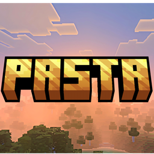
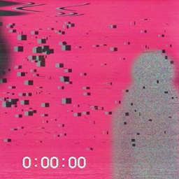
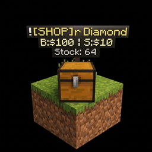
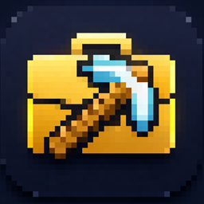
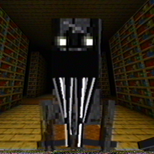
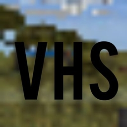

Shader pack
Pasta Shaders
Warmer lighting and atmosphere for everyday survival. Built to change the mood without losing sight of the world.
View on CurseForgeMinecraft Bedrock creator
I’m Pasta. I build Bedrock addons, server scripts, and shaders. Some make multiplayer easier. Others make survival a little stranger.
Explore my workAddons and packs you can play today.

Shader pack
Warmer lighting and atmosphere for everyday survival. Built to change the mood without losing sight of the world.
View on CurseForge
Horror addon
A slow-burn horror addon that makes normal survival feel slightly off. My most downloaded release.
View on CurseForge
Server script
Player-run chest shops for multiplayer servers. Set up a shop and trade items without a long list of commands.
View on CurseForgeMultiplayer addon
Factions for Bedrock realms and servers, with chunk claims, diplomacy, progression, and moderation in one pack.
View on CurseForge
Progression script
Jobs and income progression for server players, with clear roles and straightforward menus.
View on CurseForge
Horror addon
An unpredictable take on survival Minecraft where the world doesn’t play by normal rules.
View on CurseForge
Visual pack
An analog tape overlay for horror packs and found-footage worlds. Rough edges included.
View on CurseForgeMost of what I make starts as a small “what if” idea. I write the logic, build the models in Blockbench, and work on the visuals until the pack feels good to play.
If a menu is annoying to use or a mechanic lags a realm, I rework it.
Custom mob behaviors, economy systems, and multiplayer utilities with the Bedrock Script API.
Blockbench models, animations, and pixel textures. Custom HUDs, JSON UI menus, and shaders.
Survival and multiplayer playtesting, performance fixes, and
ready-to-install .mcaddon and
.mcpack files.
Need custom Bedrock work for your server, or want to collaborate on an addon? Tell me what you have in mind.